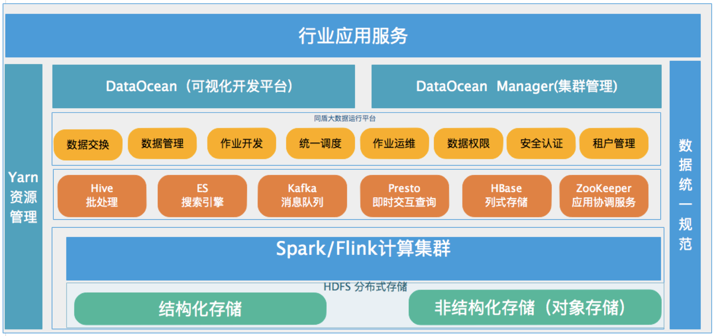

1.产品简介
1.1 试用本手册人员
本手册的用户主要针对使用星河大数据平台的售前、业务、实施、产品等。
1.2 什么是DataOcean
DataOcean是同盾深度自研的一站式大数据开发套件，它使用可视化的WebIDE界面提高数据开发的效率，使用SQL代替复杂的MapReduce或Spark RDD程序，降低数据开发的门槛。同时，它自带统一调度平台，可以支持上万个有依赖的ETL任务同时执行。另外，它集成了我们同盾数据科学家这5年积累数百个UDF，涵盖了绝大部分大数据开发的使用场景，用户可以直接拿来用，同时也支持用Python/Scala/Java自定义扩展UDF。另外平台集成强安全的权限管理，确保数据隐私不被泄露。
1.2 平台优势
高可靠性
平台经过多业务场景4年积累多次迭代到现在，稳定性已经得到了很好验证，在公司平台数据总量是35PB，每天增量100TB,实时计算接口响应小于200ms以内返回
高效数据处理
计算引擎以Spark为主，在开源spark基础上,对于catalyst计算引擎优化自主开发，能够快速实现PB级数据处理。数据处理效率在风控领域有广泛应用
高兼容性
平台兼容客户已经建设的大数据集群包括cdh、华为FI、星环TDH,可以快速对接原有平台，原有平台的数据不需要迁移
易用性强
平台降低了大数据和机器学习的使用门槛，大量使用托拉拽的模式实现数据开发和数据分析。不仅仅是开发人员使用，运维，数据分析都可以快速使用大数据
1.3 技术构架
